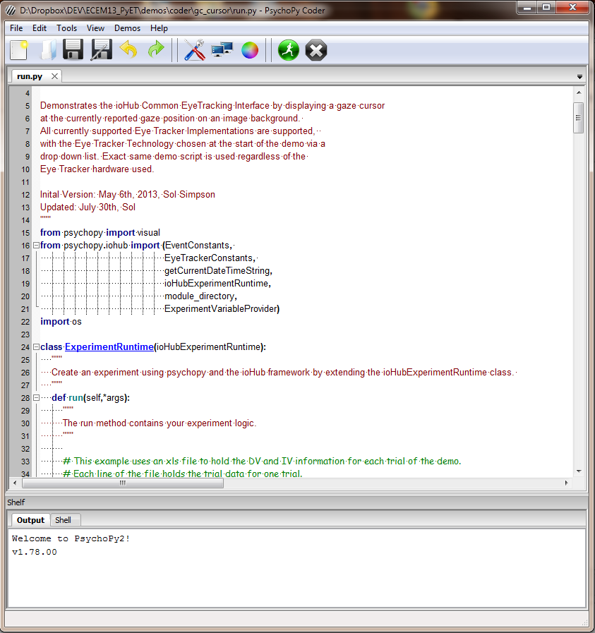

|
|
|
|
To add eyetracking into your study you will generally:
This can be done by writing Python script and using PsychoPy in the Coder mode, or by adding custom python code segments to the PsychoPy Builder. Support for graphically adding eye tracking support and data access from within Builder is expected to occur by end of this year.
For this Section of the Workshop we will use the PsychoPy Coder.
Open the PsychoPy Coder IDE
- Start->Programs->PsychoPy2->PsychoPy
Ensure the IDE is in Coder Mode
- If title of IDE has Coder in it, you are in the Coder View.
- Otherwise, select menu View->Open Coder View.
- Close the Builder View.
So now you should have the PsychoPy Coder IDE open and it should look soemthing like this:
There isn’t currently an Eyetracker Component in Builder (I’m sure there will be very soon!) but you can effectively create one yourself using a code component. Remember, these have 5 sections for Beginning the Experiment, Beginning the Routine (e.g. trial), Each Frame of the Routine, End of the Routine and End of the Experiment.
The way we’ve set up the demos is that they check first whether you’ve asked for an eye tracker to be used - in Experiment Settings we added an entry to the experiment info dialog box called ‘Eye tracker’. In the code below, if that is set to be a string that represents a valid yaml config file then we’ll have an eyetracker installed and if not we’ll revert to using the mouse as before (handy while creating the experiment in your office!).
We’ll look at these steps for a new version of the Stroop task where we simply check whether fixation was maintained during the trial and flag trials where it was broken (at any point).
Here we need to import and launch the ioHub server and set up some default values for the rest of the experiment (like how large a window we think is reasonable for fixation to be maintained):
maintain_fix_pix_boundary=66.0 # pixels
eyetracker =False #will change if we get one!
if expInfo['Eye Tracker']:
from psychopy.iohub import EventConstants,ioHubConnection,load,Loader
from psychopy.data import getDateStr
# Load the specified iohub configuration file converting it to a python dict.
io_config=load(file(expInfo['Eye Tracker'],'r'), Loader=Loader)
# Add / Update the session code to be unique. Here we use the psychopy getDateStr() function for session code generation
session_info=io_config.get('data_store').get('session_info')
session_info.update(code="S_%s"%(getDateStr()))
# Create an ioHubConnection instance, which starts the ioHubProcess, and informs it of the requested devices and their configurations.
io=ioHubConnection(io_config)
iokeyboard=io.devices.keyboard
mouse=io.devices.mouse
if io.getDevice('tracker'):
eyetracker=io.getDevice('tracker')
# Run the eye tracker setup routine.
win.winHandle.minimize()
eyetracker.runSetupProcedure()
win.winHandle.activate()
win.winHandle.maximize()
display_gaze=False
x,y=0,0
Simple code that runs if the eyetracker exists (remember, that started as False but was then assigned an eyetracker object if one was successfully created):
if eyetracker:
heldFixation = True #unless otherwise
io.clearEvents('all')
eyetracker.setRecordingState(True)
Now we need to check whether gaze has strayed outside the valid fixation window. But we’ll also check whether the user pressed ‘g’ and if so we’ll toggle the display_gaze variable.:
if eyetracker:
# check for 'g' key press to toggle gaze cursor visibility
iokeys=iokeyboard.getEvents(EventConstants.KEYBOARD_PRESS)
for iok in iokeys:
if iok.key==u'g':
display_gaze=not display_gaze
# get /eye tracker gaze/ position
gpos=eyetracker.getPosition()
if type(gpos) in [list,tuple]:
x,y=gpos
d=np.sqrt(x**2+y**2)
if d>maintain_fix_pix_boundary:
heldFixation = False #unless otherwise
This is some simple code at the end of the trial that uses the standard data outputs of PsychoPy - a column will appear in the excel/csv file showing whether fixation was held on each trial. We also stop recording eye data at the end of each trial:
if eyetracker:
eyetracker.setRecordingState(False)
#add eye-track data to data file
trials.addData("heldFixation", heldFixation)
At the end of the experiment we close the connection to the eye tracker. Since ioHub runs in a separate process; it’s good practice to shut that down just in case it fails to do so itself!:
if eyetracker:
eyetracker.setConnectionState(False)
io.quit()